Prototipo · non è un servizio ufficiale del Comune di Milano
Il pass disabili, preparato insieme. Un passo alla volta.
Pass per la sosta e la circolazione delle persone con disabilità (CUDE, Contrassegno Unico Disabili Europeo) del Comune di Milano.
Meno confusione, meno errori. I documenti sono pronti prima di cominciare il modulo del Comune.
Ci vogliono circa 15 minuti. Puoi cancellare tutto quando vuoi.
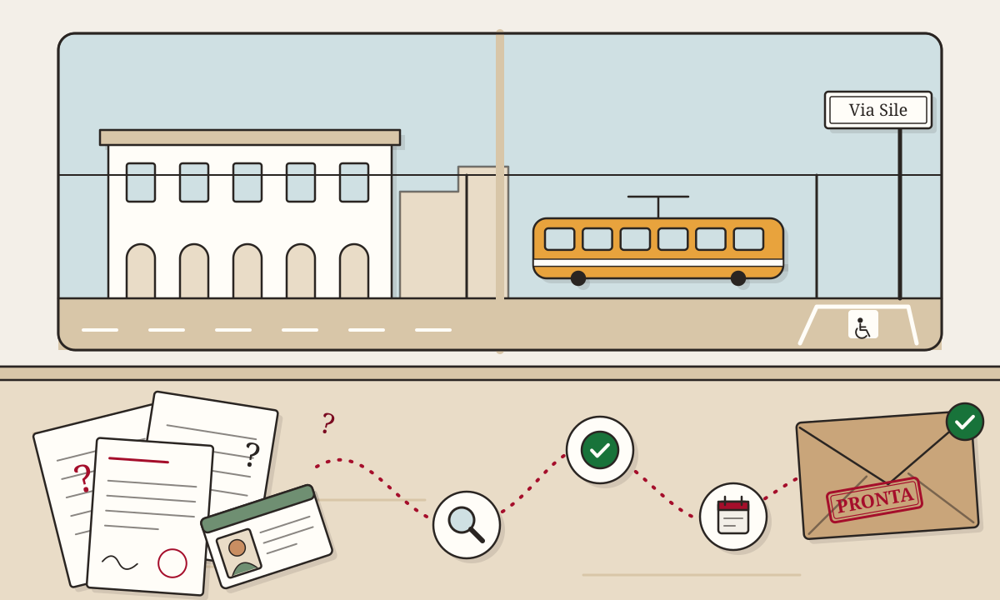
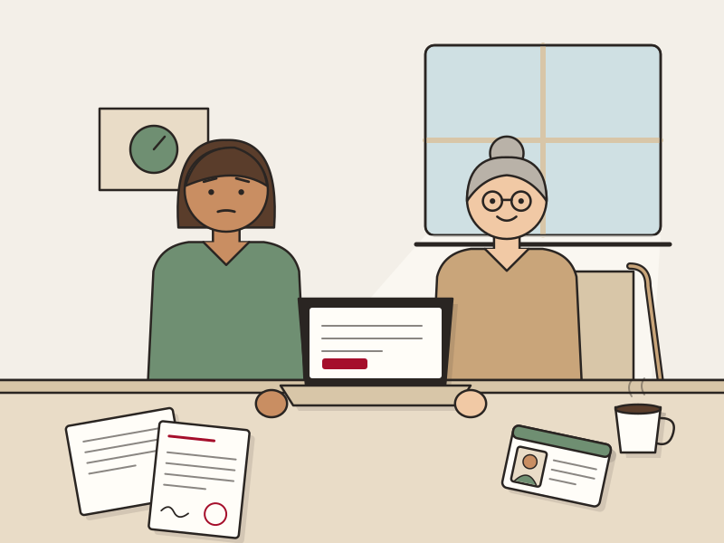
Una storia come tante
Lucia e la mamma Anna
Lucia deve aiutare sua mamma Anna, 84 anni, a chiedere il pass. Non sa quali documenti servono, se il verbale va bene, né cosa scegliere nel modulo.
Con lo Sportello Amico va per gradi, senza fretta.
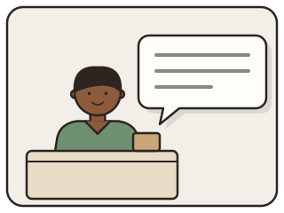
Confusione
Tanti fogli, tante domande, nessuna idea da dove cominciare.
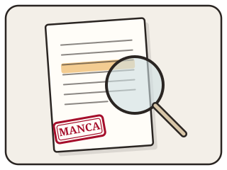
Preparazione guidata
Una domanda alla volta, con pulsanti grandi.
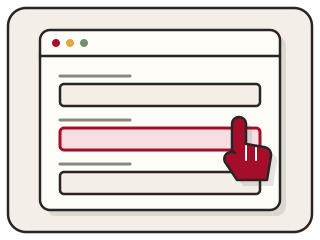
Controllo dei documenti
Se manca qualcosa, ti diciamo che cosa fare.
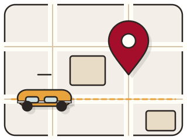
Pronta da inviare
Lucia ha tutto in ordine. Poi decide l'ufficio.
Come funziona
Ti spiega cosa serve
L'elenco dei documenti, in parole semplici.
Controlla se manca qualcosa
Pagine, frasi, formati: lo vedi subito, prima di inviare.
Ti accompagna nel modulo del Comune
Ti mostra cosa scegliere in ogni schermata.
Ti dice dove e come andare in ufficio
Indirizzo, orari e cosa portare.
La busta da preparare
Cosa ti serve, in un colpo d'occhio
Tocca un foglio per leggere i dettagli.
Verbale INPStutte le pagine, in un unico PDF
Verbale INPS con art. 381 DPR 495/1992 o status di non vedente: tutte le pagine, versione OMISSIS, in un unico PDF.
In alternativa, il certificato ASL di deambulazione ridotta.
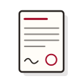
Certificato del medicosolo per il rinnovo di un pass permanente
Rinnovo di un pass permanente: certificato del medico di famiglia con una frase precisa (te la prepariamo noi):
«alla data odierna persistono le condizioni sanitarie che hanno portato al rilascio del pass disabili»
Documento d'identitàfronte e retro
Documento d'identità fronte e retro di chi ha il pass.
Fototesseraa colori
Fototessera a colori. File in PDF, JPG o PNG, massimo 5 MB ciascuno.
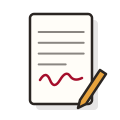
Delegase fai la domanda per un'altra persona
Un familiare o un amico può fare la domanda con delega firmata. Il tutore o l'amministratore di sostegno porta il decreto di nomina.
Cosa permette il pass
- Parcheggiare negli spazi per persone con disabilità
- Sosta gratuita sulle strisce gialle e blu a Milano
- Entrare in Area B, Area C, ZTL e corsie riservate
- Chiedere un posto auto personale vicino a casa o al lavoro
- Vale in tutta l'Unione Europea
Chi può fare la domanda
- La persona con disabilità
- Il genitore di un figlio minorenne
- Un familiare o amico, con delega firmata
- Il tutore o l'amministratore di sostegno, con il decreto di nomina
Per entrare nel modulo online serve SPID, CIE o eIDAS di chi fa la domanda.
Tempi e durata
- Il Comune risponde entro 30 giorni (nel 2025, in media 30)
- Il pass dura al massimo 5 anni, anche per invalidità permanenti
- Arriva a casa con raccomandata o si ritira su appuntamento. La scelta non si cambia dopo.
Casi diversi
- Aspetti la visita INPS e il pass scade? Proroga di 6 mesi: prenoti una telefonata.
- Pass perso o rubato? Duplicato: prenoti una telefonata.
- Non confondere il pass con la Carta Europea della Disabilità: quella si chiede all'INPS e dà sconti e agevolazioni, non serve per l'auto.
Le nostre promesse
Non inviamo niente al Comune
La domanda la invii tu, sul sito ufficiale.
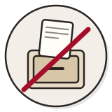
Non conserviamo i documenti
Alla fine premi "Cancella tutto".
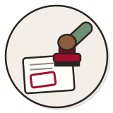
Decide sempre l'ufficio del Comune
Noi controlliamo che la domanda sia completa.
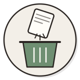
Puoi cancellare tutto, quando vuoi
Un pulsante sempre visibile.
Documento d'identità, foto e delega restano sul tuo dispositivo. Solo il documento sanitario e il riepilogo vengono letti dal controllo automatico, poi cancellati.
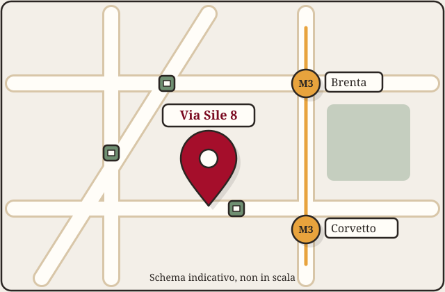
Dove andare
Unità Gestione Permessi
Via Sile 8, Milano (Municipio 4)
Lunedì–venerdì · 10:00–12:00 e 13:30–15:00
Solo su appuntamento
Metropolitana M3 Brenta o Corvetto
Autobus 77, 84, 93, 95
Telefono 02 884 52909
Email MTA.Uffdisabili@comune.milano.it
Centralino 020202
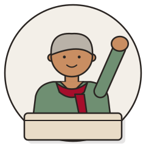
Prepariamo la domanda insieme.
Senza fretta. Se ti fermi, puoi ricominciare quando vuoi.
Inizia con lo Sportello Amico